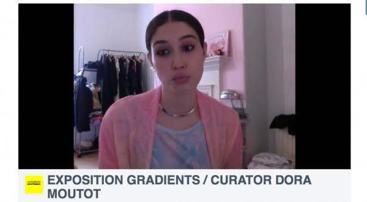
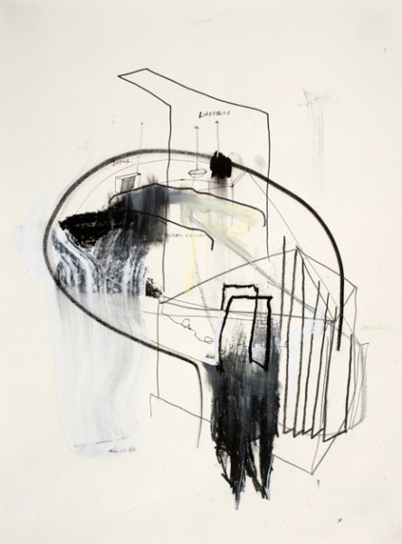

-
Selection No. 3
by Korakrit Arunanondchai November 6, 2012
Bruce High Quality Teach 4 Amerika at LACMA, Los Angeles.
1. The free art school is back in session. From my previous experience attending the Bruce High Quality Foundation University, it is what you make it to be. You can have the discussions you want to have if you bring it. It’s a good non-pedagogical space for like-minded people. Artist and non-artists can come together and talk about art and education and in relevant, no bullshit terms of today.
2. I usually wake up hungover on Sunday morning and play a Keren Cytter video. VENGEANCE is her new series. Right now there are three episodes up on her Vimeo channel. VENGEANCE is perhaps Cytter’s take on American television. I feel like I’m watching a bad dream flying through mediated images and experiences. Different vignettes simulates dramatic relationships. I feel like so much is going on even though maybe nothing is going on? Then it ends, and I want more. What just happened?

the grave of Basquiat. image by Korakrit Arunanondchai.
3. Did you know Basquiat is buried at Green-wood Cemetery? Did you also know that it is like 2 stops on the D train from Grand Street in Chinatown? I think this place is amazing and provides a kind of solitude that beats Central Park. Awesome landscape of nature and culture. Green-wood’s Burial Search allows you to type people’s name into a database computer and print out a detailed map of how to walk there through the park. It feels like an adventure when you’re doing it. I usually try and bring my dates here!
installation shot of Arunanondchai’s decor at Santos Party House, taken by the artist.
4. The new SPENCER’S GIFS party at Santos Party House is pretty much what I’ve been doing every Friday. Spencer Sweeney‘s SPENCER’s GIFS is now on the main floor at Santos, and everything sounds so good. We have legend DJ Harvey once a month, and a long list of supporters, including the Good Kids, Melissa Burns, Spencer Cherasia and drag sisterhood Chez Deep and the list goes on. The highlight, though, is Princess Magnifique Royalty — originally from the House of Xtravaganza — who arrives in a different costume every week to vougues on the stage for hours, sometimes with friends too. I’m super into it. The series runs every Friday, starting at 11 pm, at 96 Lafayette Street.
page from Billy Bat, courtesy Manga Here.
5. If you like Manga, para-fiction and cliff-hangers then Billy Bat is definitely your read. It’s a Manga about a mangaka (cartoonist) who draws a famous comic called Billy Bat, then figures out that he stole the bat drawing from someone. In an adventure to uncover this forgotten history, he discovers a supernatural cartoon bat that is behind many conspiracy theory of the 20th century from Einstein’s time traveling to JFK’s Assassination to the US moon landing. The narrative structure goes back and forth through time, and across space, leaping between the US and Japan. The series is available to read online. I usually read this comic when I stay in on a Saturday night.
screenshot of K-Hole‘s homepage.
6. K-Hole is a trend report magazine. A collaborative project between a group of really smart and interesting people, the publication has released two issues so far, both released in the form of PDF files on a USB bracelet. It is a well-done, super researched and interesting read. They really connect all these dots in popular consumer culture and coin ideas that are fascinating. All you have to do is digest as you scroll down, a format that works well on iPads and mobile devices. Current issues include Fragmoretation — a report on visibility — and Prolasticity — a report on visibility — both downloadable. I read K-Hole in the afternoon while drinking coffee or tea with bubble.
Eric Nathaniel Mack’s Electric Blanket, 2012.
7. Fore opens at the Studio Museum in Harlem November 11. Fore is “a non-thematic group presentation reflecting a multitude of ideas, approaches and processes.” I’m super excited about this exhibition. Featuring twenty-nine emerging artists of African descent, Fore is the 4th installment in a series of group shows with titles starting with the letter F. The last one, Flow, was in 2008. Eric Nathaniel Mac, Caitlin Cherry, Abigail Deville and Jacolby Satterwhite.
8. Jeremy Couillard’s 3D animated videos bring me to such a good place of psychedelic ecstasy and nostalgia. Couillard’s work creates the fantasy of what you thought the world was going to look like when you were tripping even though it never did. He’s made a few of these videos and they seem to just get better and better. My favourite one at the moment is called Black Hole Memory. The video is so good that it makes me sad these places don’t exist in real life, yet, simultaneously happy that through contemporary technology, and knowledge from video games and National Geographic these landscapes can exist on my laptop. I can just sit back and enjoy. I watch these videos late at night, kind of hoping that it will continue in my dream.
screenshot of an video of Dora Moutot.
9. Is Dora Moutot someone everyone knows about already? I very recently clicked into a video of her talking about something in French and it said curator below the video. I was initially pretty interested because she was pretty hot and speaking French. I think I watched the whole video without understanding a word. Her website is a vacuum and it seems like you can scroll down forever. It’s a lot of colors and a lot of fashion and lot of people taking pictures of themselves, mostly young people with prisma colored hair, gradients. If you’re into these things, which I am, then you probably find her amazing like I do. According to her website, she is also a part time unicorn. Is that a real thing?
Peet’s Total Cover Up, 2012. courtesy of On Stellar Rays.
10. JJ Peet’’s exhibition DEFEND_STATION at On Stellar Rays is totally simple and weird at the same time. JJ’s practice spans drawing, painting, sculpture and video in a very fundamental but thought provoking way. In his last show he made a nomadic painting station and a television show called Sunday Painter Show. In this new show, the drawing and sculptures loosely represent the idea of a floating head or thought itself. There is a list of words related to one of the drawings, and here is a part of the list:
Floating Heads
Time Collectors_
Shivs_
Communication Devices_
Peace Offerings
Least Moves Possible
Clear and Direct Moves
Residue
Leftovers
PinPoints/Labor Issues
Past Visions
Filter
Filtered
Filter Limiter
Open Filter
Holding Units
WORK HARDER
Blockers Individual
BLOCKERS
FUCKing FOCUSgo see this show! DEFEND_STATION is on view through December 16 at On Stellar Rays, 133 Orchard Street.